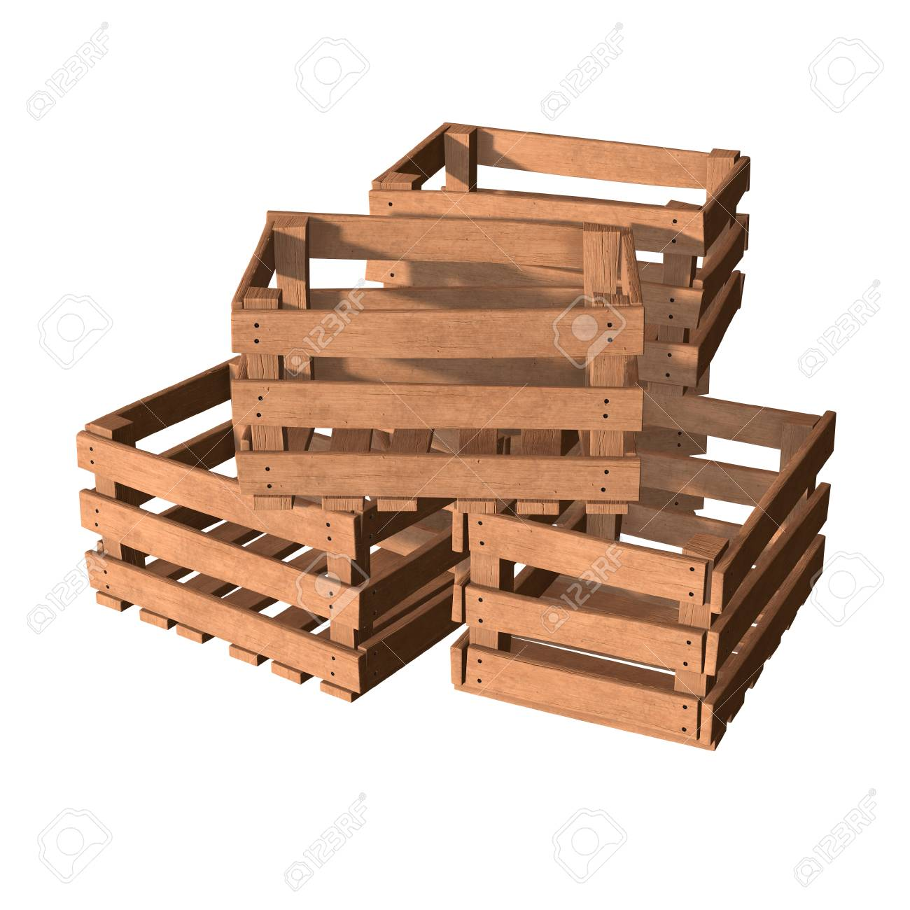
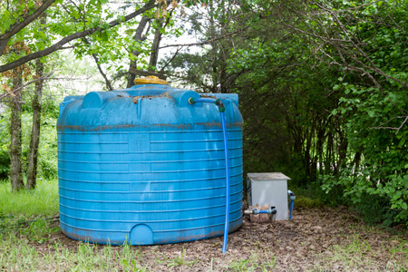

Situaciones cotidianas Pregunta SITUACIÓN 01: En el distrito de Huancayo, la familia de Lucía tiene un pequeño jardín cuadrado frente a su casa. Actualmente, cada lado mide x metros, pero desean ampliarlo 3 metros más por cada lado para sembrar flores típicas de la zona, como las cantutas. ¿Cuál será el área total del nuevo jardín una vez ampliado? Respuestas Opción 1 a) \(x^{2}+3x+3\) Opción 2 b) \(x^{2}+6x+9\) Opción 3 c) \(x^{2}+9\) Retroalimentación Incorrecto Opción correcta Incorrecto Solución Incorrecto (Retroalimentación) Opción correcta (Retroalimentación) Incorrecto (Retroalimentación) Pregunta SITUACIÓN 02: En el mercado artesanal de Concepción, los estudiantes de arte fabrican marcos cuadrados de madera. Un grupo fabrica marcos con lados de (x + 4) cm y otro grupo con lados de (x − 4) cm. Desean comparar el área de ambos tipos de marcos para ver cuál tiene mayor superficie. ¿Cuál es la diferencia de áreas entre ambos tipos de marcos? Respuestas Opción 1 a) \(x^{2}-16\) Opción 2 b) \(x^{2}-4x+16\) Opción 3 c) \(x^{2}+16\) Retroalimentación Opción correcta Incorrecto Incorrecto Solución Opción correcta (Retroalimentación) Incorrecto (Retroalimentación) Incorrecto (Retroalimentación) Pregunta SITUACIÓN 03: En la provincia de Tarma, un agricultor empaca frutas en cajas cúbicas con lado a centímetros. Para enviar más productos al mercado, decide aumentar cada lado 2 cm más.Desea calcular el nuevo volumen total de la caja ampliada. ¿Cuál es la expresión que representa el nuevo volumen? Respuestas Opción 1 a) \(x^{3}+4x^{2}+4x+8\) Opción 2 b) \(x^{3}+6x^{2}+12x+8\) Opción 3 c) \(x^{3}+2x^{3}+8\) Retroalimentación Incorrecto Opción correcta Incorrecto Solución Incorrecto (Retroalimentación) Opción correcta (Retroalimentación) Incorrecto (Retroalimentación) Pregunta SITUACIÓN 04: En una feria escolar en Jauja, una estudiante vende polos y bufandas, el precio de los polos es (p + 5) soles y el de las bufandas es (p − 2) soles. Desea representar algebraicamente el producto del costo de ambos artículos. ¿Cuál es la expresión que representa el producto de ambos precios? Respuestas Opción 1 a) \(p^{2}+7p+10\) Opción 2 b) \(p^{2}-3p-10\) Opción 3 c) \(p^{2}+3p-10\) Retroalimentación Incorrecto Incorrecto Opción correcta Solución Incorrecto (Retroalimentación) Incorrecto (Retroalimentación) Opción correcta (Retroalimentación) Pregunta SITUACIÓN 05: En una chacra de Chupaca, un tanque cúbico de agua tiene lado v metros, pero el agricultor decide reducir cada lado en 1 metro para usarlo como depósito auxiliar.Desea conocer el nuevo volumen del tanque más pequeño. ¿Cuál es la expresión desarrollada de (v − 1)³? Respuestas Opción 1 a) \(v^{3}+3v^{2}+3v-1\) Opción 2 b) \(v^{3}-v^{2}+1\) Opción 3 c) \(v^{3}-3v+1\) Retroalimentación Opción correcta Incorrecto Incorrecto Solución Opción correcta (Retroalimentación) Incorrecto (Retroalimentación) Incorrecto (Retroalimentación)